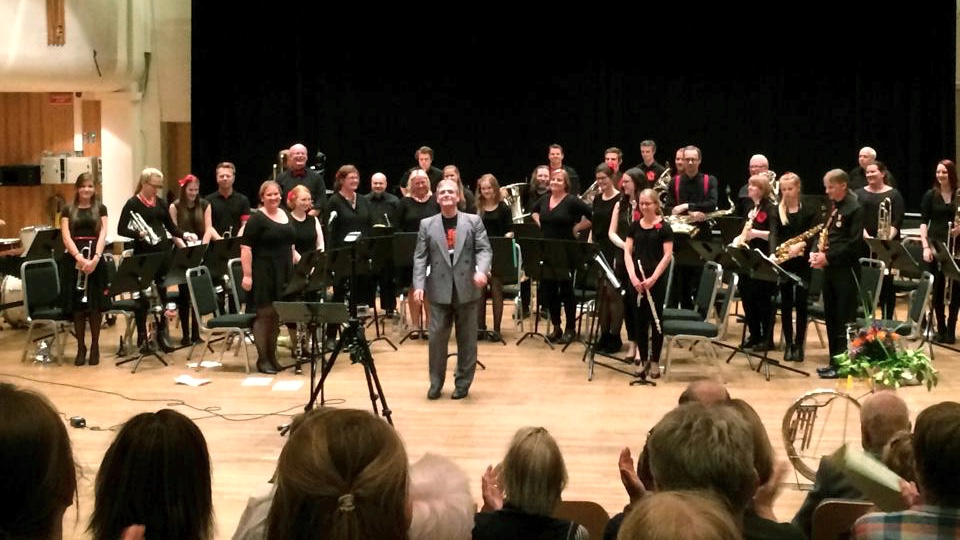

Den norske løve/Eidsvågsangen
Oscar Borg/trad.
Norsk dans nr. 1
Edvard Grieg
Corsican Litany
Vaclav Nelhybel
Historikk og æresmedlemmer
Ved Bjørn Storegjerde
The Legend of Ali Baba
Bert Appermont/Frank Van Baelen
Vesle Hoa Hottentott
Thorbjørn Egner, arr. Reid Gilje
Bruremarsj
Jan Magne Førde
Blood, Sweat... At their best
Arr. Bjørn Morten Kjærnes
Sokkane
Vinskvetten, arr. Magne Rutle
Farvel til en slavisk kvinne
Vasiliev Akapkin, arr. Jan Eriksen
Fest i Dovregubbens hall
Edvard Grieg, arr. Idar Torskangerpoll
Children of Sanchez
Chuck Mangione, arr. Reid Gilje
Just a Gigolo
Arr. Jens Wendelboe, instr. Reid Gilje
Riverdance
Bill Whelan, arr. Ray Farr
Tjo hei og duddeli dei
Vinskvetten, arr. Magne Rutle
